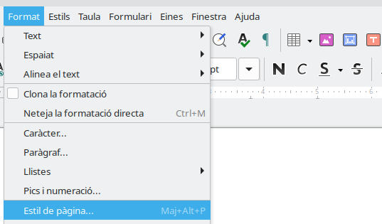
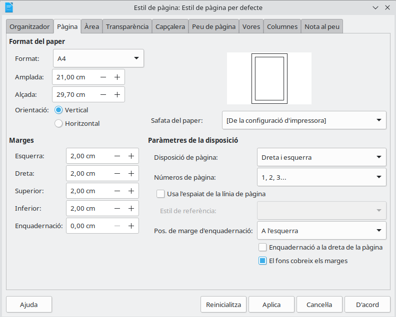

Configuración básica de la página
¿Qué vamos a hacer hoy?
Hoy aprenderemos a preparar la página de un documento antes de empezar a trabajar con él.
Aprenderemos a:
- Comprobar el tamaño de la página.
- Cambiar la orientación de la página.
- Modificar los márgenes.
- Elegir la configuración más adecuada para cada documento.
- Guardar el documento con el nombre indicado.
Después aplicaremos estos cambios al documento de nuestro evento.
¿Qué debemos recordar?
Antes de empezar, debemos recordar que:
- Writer sirve para crear y modificar documentos de texto.
- El cursor indica dónde aparecerá el siguiente carácter.
- Los documentos de Writer utilizan normalmente la extensión
.odt. - Debemos guardar cada documento en la carpeta indicada.
- El nombre del archivo debe indicar claramente qué contiene.
Ejemplo de nombre poco claro:
documento1.odt
Ejemplo de nombre claro:Cartel_KDD49_Valencia.odt
¿Qué criterio vamos a trabajar?
CE03-d: Se han configurado las páginas del documento de acuerdo con las indicaciones propuestas.
En esta actividad trabajaremos principalmente:
- El tamaño de la página.
- La orientación.
- Los márgenes.
1. La página del documento
Cuando creamos un documento en Writer, escribimos sobre una página.
Antes de trabajar, podemos decidir cómo queremos que sea esa página:
- Su tamaño.
- Su orientación.
- El espacio que quedará alrededor del texto.
Esta configuración dependerá del documento que queramos preparar.
Por ejemplo, un cartel y una carta pueden necesitar configuraciones diferentes.
2. El tamaño de la página
El tamaño indica las dimensiones que tendrá la página cuando se visualice o se imprima.
El tamaño más utilizado es el A4.
Una página A4 mide:
- 21 centímetros de ancho.
- 29,7 centímetros de alto.
Normalmente utilizaremos el tamaño A4 para:
- Cartas.
- Trabajos de clase.
- Fichas.
- Informes.
- Programas de actividades.
Antes de imprimir un documento, debemos comprobar que el tamaño de la página sea correcto.
Cambiar el tamaño en Writer
- Abre el menú Format.
-
Selecciona Estil de pàgina.

-
Busca la pestaña Pàgina.
- En la sección Format del paper
-
Selecciona A4.

-
Pulsa D'acord.
3. La orientación de la página
La orientación indica la posición en la que utilizaremos la página.
Existen dos orientaciones principales.
Orientación vertical
La página es más alta que ancha.
Se utiliza habitualmente para:
- Cartas.
- Informes.
- Fichas.
- Trabajos escritos.
- Portadas.
Orientación horizontal
La página es más ancha que alta.
También se llama orientación apaisada.
Se utiliza habitualmente para:
- Carteles.
- Horarios.
- Calendarios.
- Tablas grandes.
- Programas de eventos.
| Vertical | Horizontal |
|---|---|
| La página es más alta | La página es más ancha |
| Adecuada para textos | Adecuada para carteles y horarios |
Cambiar la orientación en Writer
- Abre el menú Format.
-
Selecciona Estil de pàgina.
-
Busca la pestaña Pàgina.
-
En la sección Orientació, selecciona Vertical u Horitzontal.
- Pulsa D'acord.
La orientación correcta dependerá del documento que queramos crear.
4. Los márgenes
Los márgenes son los espacios en blanco que quedan entre el contenido y los bordes de la página.
Una página tiene cuatro márgenes:
- Margen superior.
- Margen inferior.
- Margen izquierdo.
- Margen derecho.
Los márgenes evitan que el texto quede demasiado cerca del borde.
También ayudan a que el documento sea:
- Más claro.
- Más ordenado.
- Más fácil de leer.
- Más fácil de imprimir.
Cambiar los márgenes en Writer
- Abre el menú Format.
-
Selecciona Estil de pàgina.
-
Busca la pestaña Pàgina.
-
Busca la sección Marges y escribe la medida indicada.
- Pulsa D'acord
Por ejemplo, podemos utilizar un margen de 2 centímetros en los cuatro lados.
No debemos utilizar espacios o la tecla Intro para crear márgenes. Los márgenes se configuran desde las opciones de la página.
5. ¿Qué configuración debemos elegir?
La configuración depende del documento que estemos preparando.
| Documento | Tamaño | Orientación |
|---|---|---|
| Carta | A4 | Vertical |
| Trabajo de clase | A4 | Vertical |
| Cartel de un evento | A4 | Vertical u horizontal |
| Horario | A4 | Horizontal |
| Programa de actividades | A4 | Horizontal |
No existe una única configuración válida para todos los documentos.
Debemos seguir siempre las instrucciones recibidas.
6. Guardar el documento
Después de modificar la configuración de la página, debemos guardar los cambios.
Podemos utilizar:
Fitxer → Desa
También podemos utilizar la combinación:
Ctrl + S
Si queremos conservar el documento original y crear otro diferente, utilizaremos:
Fitxer → Anomena i desa
Después elegiremos:
- La carpeta indicada.
- Un nombre significativo.
- El formato
.odt.
Resumen
Antes de trabajar con un documento debemos comprobar:
- El tamaño de la página.
- La orientación.
- Los márgenes.
- La carpeta donde se guardará.
- El nombre del archivo.
Una página bien configurada permite crear un documento más claro, ordenado y fácil de imprimir.
Antes de empezar la actividad
Comprueba que puedes responder estas preguntas:
- ¿Cuál es el tamaño de página más utilizado?
- ¿Qué diferencia existe entre orientación vertical y horizontal?
- ¿Qué son los márgenes?
- ¿Dónde podemos cambiar la configuración de la página?
- ¿Qué opción utilizamos para crear una copia con otro nombre?